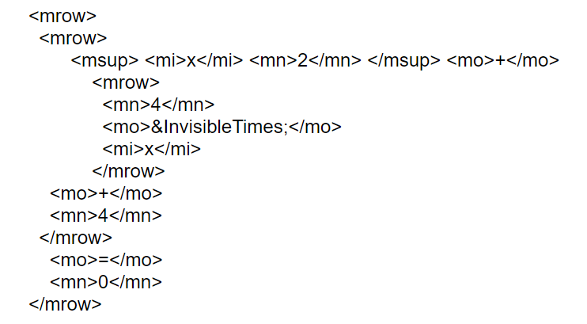

MathML
MathML står for Mathematical Markup Language. Det er et språk for å uttrykke matte på internett. Språket deles inn i to deler, innhold og presentasjon. Content-MathML beholder semantikken og meningen i det matematiske uttrykket, mens Presentation-MathML beskriver hvordan det skal vises. P-MathML lar bruker ha kontroll over hvordan uttrykket skal se ut. For eksempel farger, størrelse og symboler. Man skriver MathML akkurat som HTML, med tagger og attributter. Men HTML tar ikke hensyn til matematikk, derfor lagde man Mathematical Markup Language. Før man hadde dette språket, så var det vanlig å sette inn bilder av matematiske formler. Dette er et problem, ettersom man ikke har mulighet til å for eksempel kopiere eller redigere formelen. Bildet vil også miste kvalitet ved opp eller nedskalering. En annen fordel med å bruke dette språket er for de som er svaksynte. MathML gir deg nemlig mulighet til å få matematikken lest opp, dersom man har behov for det. Nettsider som bruker MathML kan også resultere i å få økt antall besøkende, nemlig fordi at maskinen forstår at denne nettsiden har matematiske uttrykk, fremfor et bilde, som maskinen bare leser som et bilde.
Under er noen eksempler på matematiske uttrykk, skrevet med MathML. Språket gir også mulighet til å redigere matematikken direkte på nettsiden.
Under er et eksempel på presentasjon og innhold.
P-MathML sine elementer begynner med m og fokuserer på hvordan uttrykket skal se ut. Noen eksempler på tagger er: <mi></mi> (identifiers), <mo></mo> (operators), <mn></mn> (numbers) og <mtext></mtext> (text). Disse taggene kombinerer man med tagger som bestemmer layouten til koden. Disse er for eksempel: <mrow> (horisontal rad med innhold), <mfrac> (fractions), <mroot> (root) og <mfenced> (paranteser). C-MathML fokuserer på meningen i uttrykket. Eksempler på tagger som forteller noe om meningen er: <apply> (apply er et element som representerer funksjoner som kommer under), <ci> (identifiers), <cn> (numbers), <power/> og <plus/>. Det er disse taggene som utgjør MathML.
